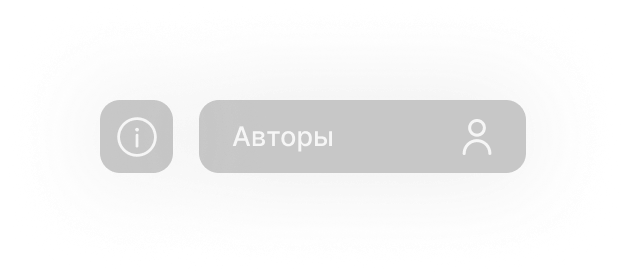

Описание ( Яндекс GPT2 )Этот молодой человек, едва достигший порога своего 20-летия, представляет собой уникальную и поразительную смесь молодости, энергии, обаяния и интеллекта. С его проницательными голубыми глазами и густыми русыми волосами, он обладает внешностью, которая одновременно свежа и привлекательна.
Он всегда стремится к новым знаниям и опыту, открывая для себя новые горизонты и исследуя мир вокруг себя. Его страсть к путешествиям и приключениям делает его отважным и решительным, но в то же время открытым и любознательным.
В общении с другими людьми он проявляет искренность и теплоту, всегда готовый помочь и поддержать своих близких и друзей.
О сайтеИзображения использованые на сайте были сгенерированы
MidjourneyВидео:
budii mashup
Права на фоновую музыку:
Production Music courtesy of Epidemic Sound!